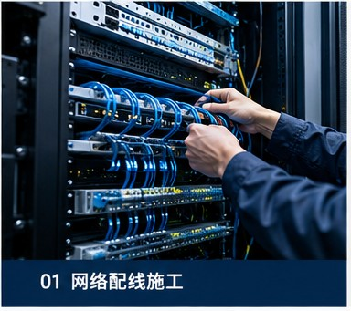
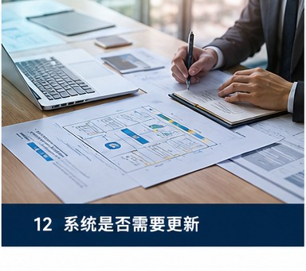
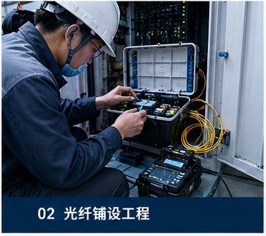

On-site Network & Infrastructure Implementation Support
Building a stable, reliable foundation for site operations — keeping projects on track and on schedule.

Significant Wait Time from Design to Construction
Field Problem
Many system projects fall behind schedule not because construction is difficult, but because of extensive downtime between design and implementation: design approvals, material selection, division of responsibilities, multi-team coordination. Countless hours are lost to waiting and repeated confirmations.
Izumo Soan's Solution
With system integration and on-site engineering experience, we quickly understand design goals and site requirements.
We do more than execute construction — we actively participate in design discussions, feasibility assessments, material optimization, multi-team coordination, and on-site progress management.
Through "early on-site involvement", we help clients:
- ✓ Reduce wait times
- ✓ Lower communication costs
- ✓ Accelerate on-site progress
- ✓ Keep projects on schedule

Waste of Time and Resources from On-Site Construction Errors
Field Problem
Construction may be technically correct but directionally wrong — due to client instruction deviations, differing drawing interpretations, changing site conditions, or inconsistent information across teams. When this happens, it wastes materials and labor while delaying the entire project timeline.
Izumo Soan's Solution
We prioritize understanding the client's true goal — even when clear instructions are given, we proactively verify design intent, site suitability, and potential risks.
For example, when a client requests "run fiber from point A to point B," we don't just execute — we consider whether the locations are correct, whether there are conflicts with existing structures, and whether backup plans are needed.
Through early verification, risk anticipation, and on-site validation, we help clients:
- ✓ Reduce construction errors
- ✓ Lower rework risk
- ✓ Ensure stable project progress

Construction Coordination and Risk Control in Complex Operating Environments
Field Problem
In data centers, factories, and other continuously operating sites, multiple contractors often work simultaneously: cross-team overlapping work, some areas cannot be powered down, and construction activities interfere with one another. Teams lacking coordination skills can only wait passively, sometimes disrupting the client's normal operations.
Izumo Soan's Solution
We emphasize dynamic coordination capability in complex environments — focusing on overall site operations, multi-team impact, risk anticipation, and balancing construction with operations.
Through proactive coordination, optimized construction sequencing, dynamic adjustment, and shared risk management, we help clients advance projects steadily in complex operational environments.
- ✓ Minimize construction impact on operations
- ✓ Reduce risks of multi-team cross-work
- ✓ Ensure stable progress in complex environments
We always prioritize: safety first, respect site rules, and protect our clients' ongoing operations.
We offer more than construction services
We help clients: advance the site, coordinate on-site, stabilize operations, and support long-term operations.
Izumo Soan is committed to: being the engineering partner that truly understands the field.